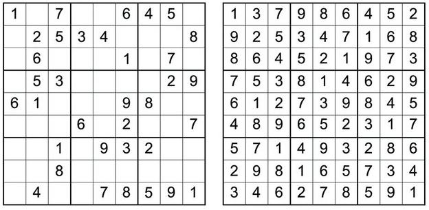

Пример сложенијег програма¶
Као пример сложенијег програма приказаћемо програм за решавање загонетке Судоку. Задатак је да се табла димензије \(9 \times 9\) попуни цифрама од 1 до 9 тако да су цифре у свакој врсти, свакој колони и сваком од 9 квадрата димензије \(3 \times 3\) буду различити. Обично се креће од поља на ком се већ налазе неки бројеви циљ је попунити сва остала поља. Један пример делимично попуњенe Судоку табле и коначног решења је дат на наредној слици.
Иако је оригинална загонетка димензије \(9 \times 9\), она
теоријски може бити било које димензије \(d^2 \times d^2\) (у
оригиналној варијанти је \(d=3\)). Стога ћемо увести константу
dim која одређује димензију табле.
dim = 3
Пређимо сада на дефинисање основних типова. Таблу ћемо представити као
матрицу тј. листу листи које садрже бројеве, при чему ћемо бројеве,
једноставности ради, представити типом Int. Пошто су бројеви од 0
до \(d^2\), могао би бити коришћен и неки ужи тип. Празна поља
ћемо означавати бројем 0 (уместо овога могао би бити коришћен тип
Maybe Int, који, подсетимо се, омогућава представљање опционих
вредности). Декларацијом type дефинишемо нови тип тако што дајемо
ново име постојећем типу.
type Broj = Int
type Tabla = [[Broj]]
Важно је да умемо да за дату таблу прочитамо сваку појединачну врсту, сваку колону и сваки квадрат димензије \(d \times d\).
Претпостављаћемо да је наша табла представљена листом својих врста, па је врсту тривијално прочитати (само читамо листу на датој позицији унутар наше листе листи, при чему су врсте нумерисане бројевима од 0 до \(d^2 - 1\)).
Што се тиче колоне, она се добија тако што се из сваке врсте издвоји
елемент на датој позицији. Ово се елегантно може реализовати применом
пресликавања тј. функције map. Квадрате нумеришемо бројевима од 0
до \(d^2-1\) одозго наниже, слева надесно. Сваком квадрату могу
бити придружене две координате од 0 до \(d-1\) које се одређују
као целобројни количник и остатак при дељењу редног броја квадрата
бројем \(d\). Множењем тих координата са \(d\) добијају се
координате горњег левог поља у квадрату. Квадрат онда издвајамо тако
што прво издвојимо \(d\) врста кренувши од врсте у којој се налази
горње лево поље квадрата, затим из тих врста издвојимо \(d\)
колона кренувши од колоне у којој се налази горње лево поље квадрата и
на крају добијену листу листи димензије \(d\times d\) спојимо у
једну листу која садржи \(d^2\) елемената (то можемо урадити
библиотечком функцијом concat).
vrsta :: Tabla -> Int -> [Broj]
vrsta tabla v = tabla !! v
kolona :: Tabla -> Int -> [Broj]
kolona tabla k = map (\ vrsta -> vrsta !! k) tabla
kvadrat :: Tabla -> Int -> [Broj]
kvadrat tabla kv =
let v = kv `div` dim;
k = kv `mod` dim
vrste = map (vrsta tabla) [dim*v..dim*v+dim-1]
kolone = map (kolona vrste) [dim*k..dim*k+dim-1]
in concat kolone
Сада можемо да пређемо на основни алгоритам претраге са повратком. Алгоритам ће бити реализован кроз функцију
popuni :: Tabla -> [Tabla]
која добија делимично попуњену таблу и враћа све исправно попуњене табле које се од ње могу добити. Током претраге ћемо попуњавати једно по једно празно поље и то на све могуће исправне начине. Стога ћемо дефинисати рекурзивну функцију
popuniPolje :: Tabla -> Polje -> [Tabla]
која прима делимично попуњену таблу и координате неког поља на њој и затим попуњава то поље на све могуће начине и наставља попуњавање рекурзивно од следећег поља све док се не попуни цела табла. Поља су суштински представљена као уређени парови координата, међутим, да бисмо добили читљивији код увешћемо посебан тип.
newtype Polje = Polje (Int, Int)
Након попуњавања текућег поља прелазићемо на попуњавање следећег поља и стога дефинишемо функцију која проналази следеће на основу датог текућег поља (она увећава колону за један, а ако се тиме добије координата колоне која је ван опсега, увећава врсту за један). Претрага ће се завршавати када следеће поље не постоји, па стога дефинишемо и помоћну функцију којом проверавамо да ли је добијено следеће поље исправно.
sledece :: Polje -> Polje
sledece (Polje (v, k)) = if k + 1 < dim*dim
then Polje (v, k+1)
else Polje (v+1, 0)
ispravno :: Polje -> Bool
ispravno (Polje (v, k)) = v < dim*dim && k < dim*dim
Дефинишимо сада функције за читање броја са датог поља и упис броја на дато поље. Операција измене елемента на датој позицији у листи није карактеристична за функционално програмирање (јер је линеарне сложености, па је веома неефикасна). Уместо листа постоји могућност коришћења других структура података које омогућавају ефикасну измену елемента на датој позицији (наравно, измена није у месту већ се враћа измењена структура података, док оригинална остаје непромењена), међутим, пошто су наше листе кратке, ми ћемо се задржати на листама.
Дефинишимо прво функцију која враћа листу која се добија изменом
полазне листе тако што се на дату позицију упише дата вредност. Њу је
веома лако дефинисати помоћу функција take која узима дати број
елемената са почетка листе, drop која избацује дати број елемената
са почетка листе и оператора ++ који надовезује листе.
upisi :: [a] -> Int -> a -> [a]
upisi xs i v = take i xs ++ [v] ++ drop (i+1) xs
Сада лако можемо дефинисати функције за читање и упис броја. Упис
вршимо тако што у полазну таблу на позицију v упишемо врсту која
се добија када се у врсту на позицији v у полазној табли, на
позицију k упише жељени број.
brojNaPolju :: Tabla -> Polje -> Broj
brojNaPolju tabla (Polje (v, k)) = tabla !! v !! k
upisiBroj :: Tabla -> Polje -> Broj -> Tabla
upisiBroj tabla (Polje (v, k)) p = upisi tabla v (upisi (vrsta tabla v) k p)
У главној функцији претраге на текуће поље треба да упишемо све могуће
исправне вредности. Ако је број на том пољу различит од нуле, он мора
остати такав и претрага се наставља од наредног поља. Ако на пољу пише
нула, која означава да је поље празно, тада за све бројеве од 1 до
\(d\) треба испитати да ли је могуће уписати их на то поље. То је
могуће ако се у врсти у којој се налази то поље, у колони у којој се
налази то поље и у квадрату у ком се налази то поље већ не налази тај
број. За дато поље познати су редни број врсте и колоне у којој се оно
налази, а дефинисаћемо помоћну функцију која израчунава редни број
квадрата у ком се то поље налази, а затим коришћењем раније дефинисане
функције kvadrat одређује и бројеве уписане у тај квадрат.
kvadratOko :: Tabla -> Polje -> [Broj]
kvadratOko tabla (Polje (v, k)) =
let vv = v `div` dim;
kk = k `div` dim
in kvadrat tabla (dim*vv + kk)
Провера да ли се број може уписати у квадрат се сада своди на проверу елемената врсте, колоне и квадрата.
mozeSeUpisati :: Tabla -> Polje -> Broj -> Bool
mozeSeUpisati tabla (Polje (v, k)) broj =
broj `notElem` (vrsta tabla v) &&
broj `notElem` (kolona tabla k) &&
broj `notElem` (kvadratOko tabla (Polje (v, k)))
На крају можемо дефинисати и централну функцију која врши бектрекинг
претрагу. Прокоментаришимо функцију popuniPolje. Ако поље које
треба попунити није исправно, тј. излази ван граница табле, то значи
да се стигло до краја, да је цела табла исправно попуњена и стога је
она једино своје исправно проширење. У супротном, ако је на датом пољу
већ уписана нека вредност, рекурзивно се прелази на попуњавање
следећег поља. У супротном одређујемо прво низ brojevi који садржи
све бројеве од 1 до \(d^2\) који се могу уписати на текуће поље
тако да табла и даље остане исправна, затим се одређује низ table
који садржи табле које се добијају уписом тих бројева на текуће поље,
затим се за сваку тако добијену таблу рекурзивно одређују сва исправна
проширења до потпуно попуњене табле (добија се листа табли) и на крају
се све тако добијене табле спајају у једну листу. Приметимо да користимо
функцију concatMap која спаја функционалност функције
map (popuniPolje (sledece polje)) table којом покрећемо рекурзивно
претрагу за сваку таблу из листе table и concat која спаја добијену
листу листи у јединствену листу.
popuni :: Tabla -> [Tabla]
popuni tabla = popuniPolje (Polje (0, 0)) tabla
where popuniPolje :: Polje -> Tabla -> [Tabla]
popuniPolje polje tabla =
if not (ispravno polje) then [tabla]
else if brojNaPolju tabla polje /= 0 then
popuniPolje (sledece polje) tabla
else
let
brojevi = filter (mozeSeUpisati tabla polje) [1..dim*dim];
table = map (upisiBroj tabla polje) brojevi
in
concatMap (popuniPolje (sledece polje)) table
На крају програм можемо тестирати на конкретним примерима.
sudoku :: Tabla
sudoku=[[5,3,0,0,7,0,0,0,0],
[6,0,0,1,9,5,0,0,0],
[0,9,8,0,0,0,0,6,0],
[8,0,0,0,6,0,0,0,3],
[4,0,0,8,0,3,0,0,1],
[7,0,0,0,2,0,0,0,6],
[0,6,0,0,0,0,2,8,0],
[0,0,0,4,1,9,0,0,5],
[0,0,0,0,8,0,0,7,9]]
Може се приметити да иако нису вршене никакве специфичне оптимизације, програм сасвим ефикасно ради за све табле димензије \(3 \times 3\). Позив
>> popuni sudoku
даје резултат
[[[5,3,4,6,7,8,9,1,2],
[6,7,2,1,9,5,3,4,8],
[1,9,8,3,4,2,5,6,7],
[8,5,9,7,6,1,4,2,3],
[4,2,6,8,5,3,7,9,1],
[7,1,3,9,2,4,8,5,6],
[9,6,1,5,3,7,2,8,4],
[2,8,7,4,1,9,6,3,5],
[3,4,5,2,8,6,1,7,9]]]
што значи да постоји само један начин да се полазни проблем реши (по правилима Судоку, загонетке се конструишу тако да имају јединствено решење).